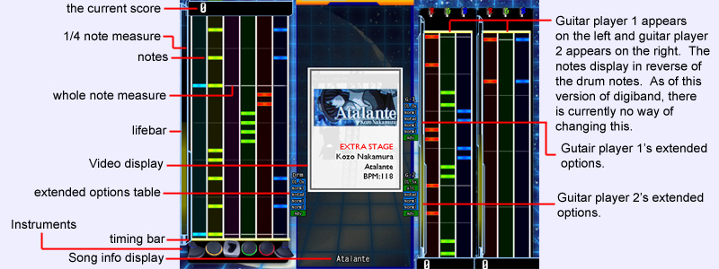

|  | ||
|
This is a screen shot of both the drum and guitar modes activated at game time. You will notice that the notes scroll down for drums and up for guitars. This was designed for those familiar with other popular games similar to DigiBand, and will in a future release of DigiBand will have options for scrolling up or down. Here you will be actively playing the music as it is displayed. When a note passes the timing bar, you must be pressing the appropriate instrument key at this time. (more about this in "how to play") The video display plays the video for the song, certain themes will have animations in the background. Notes and measure bars will scroll on the screen evenly. If you miss any notes or play them poorly, the lifebar will decrease. If the life bar decreases to zero you will see this:
When playing solo, you shold immediately notice that the video window is bigger. You will want to make sure of this, because when playing with others the life meter is shared! Once all three players reach zero life, the game will end. Here are screen shots of what your screen should look like while playing solo: |